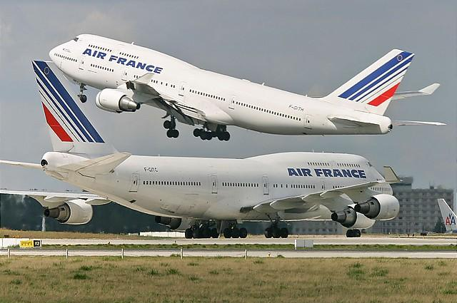
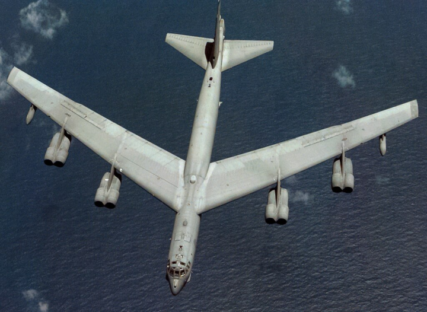

Există multe criterii de clasificare a aeronavelor (unele însă destul de subiective). Urmează câteva dintre ele, exemplificând, fără a lua în considerație elicopterele, dirijabilele, avioanele ultraușoare sau cele fără structură de rezistență.
Un prim criteriu este după destinația lor:
aeronave cu destinație civilă (Boeing 747, Airbus A300, Antonov AN-2, Dassault Falcon, Concorde)
aeronave cu destinație militară: construite și înarmate în vederea executării unei misiuni de luptă (F-16, MIG-21, Suhoi SU-27, Dassault Rafale, IAR 93)
aeronave cu destinație specială (Northrop-Grumman RQ-4 Global Hawk, AeroVironment Pathfinder, Helios)
Aeronavele cu destinație civilă sunt folosite pentru transportul pasagerilor, al mărfurilor sau aeronavele utilitare. Din punct de vedere al distanței de zbor, ele se clasifică în aeronave pentru:
distanțe scurte – scurt-curiere (Airbus A318, Embraer ERJ-145)
distanțe medii – mediu curiere (Airbus A300, Boeing 737, BAe, BAC 1-11)
distanțe mari – lung-curiere (Boeing 747, Airbus A340, Concorde)
transport cargo -( Antonov AN-124),
Multe linii aeriene împart avioanele cu destinație civilă în alte două categorii din punct de vedere operațional:
avioane regionale - avioane de capacitate redusă, pentru curse scurte, din orașe mici, către un punct central, deseori operate de o sucursală sau un partener al liniei aeriene : Embraer ERJ 135, Bombardier Canadair CRJ 200, Avro RJ, Fokker F100 etc.
avioane de linie principală, capabile de capacități și distanțe mai mari, cu servicii oferite direct de linia aeriană : toate modelele civile Airbus și Boeing, Tupolev 154, Il-96, etc.
După sistemul de propulsie, aeronavele se clasifică în:
aeronave cu elice (AN-2, Cessna 172, ZLIN Z-142)
aeronave cu reacție (Boeing 747, A340, MIG-21, F-16, AN-124, Concorde)
aeronave cu elice și reacție (turbopropulsor) (ATR-42, C-130 Hercules)


| |